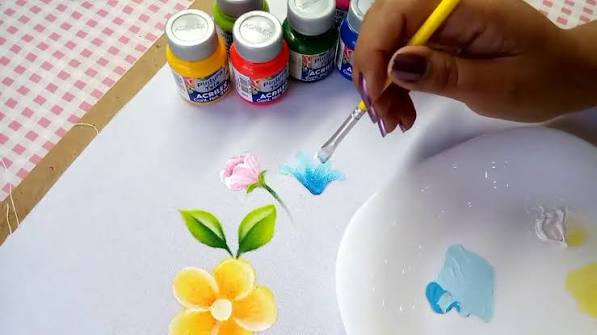
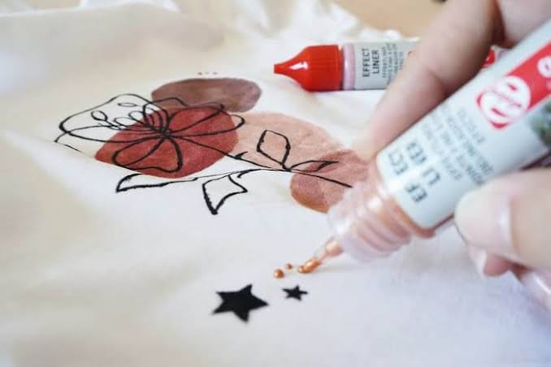
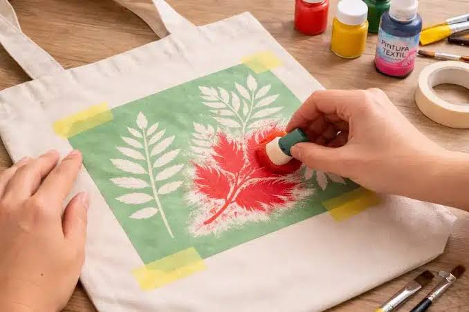

Pincel libre · Iniciación · 15 min
Tus primeras pinceladas
Lava y seca la tela sin suavizante. Coloca cartón dentro de la prenda y aplica capas finas de pintura textil con un pincel suave.

04 / Tutoriales
Abre el cajón de los pinceles. Compartimos técnicas y pequeños consejos para que empieces a experimentar sobre tela.

Pincel libre · Iniciación · 15 min
Lava y seca la tela sin suavizante. Coloca cartón dentro de la prenda y aplica capas finas de pintura textil con un pincel suave.

Esténcil · Iniciación · 20 min
Fija la plantilla con cinta. Descarga el exceso de pintura y da pequeños toques con una esponja para conseguir bordes limpios.

Acuarela textil · Intermedio · 25 min
Humedece ligeramente el tejido y diluye solo una pintura apta para tela. Prueba primero en un retazo para controlar cómo se expande el color.
Deja secar y fija el color según las instrucciones de tu pintura. Lava la prenda del revés, con agua fría y sin frotar el dibujo.